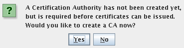
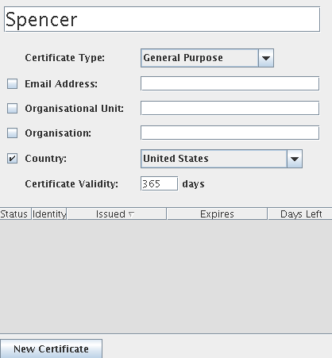
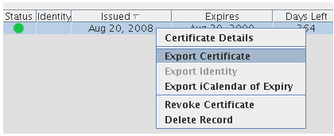
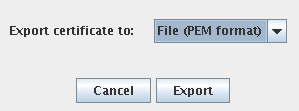
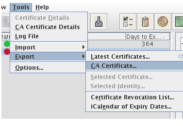
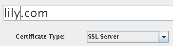

This section explains some side tasks as well as some none-default configurations.
Configuring the container manually without the AutoContainer
Configuring Nimbus basics manually without the auto-configuration program
The Nimbus conf files have many comments around each configuration. Check those out. Their content will be inlined here in the future.
See the $GLOBUS_LOCATION/etc/nimbus/workspace-service directory.
After installing, see the $GLOBUS_LOCATION/etc/nimbus/elastic directory. The .conf file here specifies what the EC2 "instance type" allocations should translate to and what networks should be requested from the underlying workspace service when VM create requests are sent.
By default, a Nimbus installation will enable this service:
https://10.20.0.1:8443/wsrf/services/ElasticNimbusService
But before the service will work, you must adjust a container configuration. This will account for some security related customs for EC2:
Secure message is used, but only on the request. No secure message envelope is sent around EC2 responses, therefore EC2 clients do not expect such a response. It relies on the fact that https is being used to protect responses.
Both integrity and encryption problems are relevant, be wary of any http endpoint being used with this protocol. For example, you probably want to make sure that add-keypair private key responses are encrypted (!).
Also, adjusting the container configuration gets around a timestamp format incompatibility we discovered (the timestamp is normalized after the message envelope signature/integrity is confirmed).
There is a sample container server-config.wsdd configuration to compare against here.
Edit the container deployment configuration:
_EXAMPLE_CMD_BEGIN nano -w etc/globus_wsrf_core/server-config.wsdd _EXAMPLE_CMD_ENDFind the <requestFlow> section and comment out the existing WSSecurityHandler and add this new one:
<handler type="java:org.globus.wsrf.handlers.JAXRPCHandler">
<!-- enabled: -->
<parameter name="className"
value="org.nimbustools.messaging.gt4_0_elastic.rpc.WSSecurityHandler" />
<!-- disabled: -->
<!--<parameter name="className"
value="org.globus.wsrf.impl.security.authentication.wssec.WSSecurityHandler"/> -->
</handler>
Now find the <responseFlow> section and comment out the existing X509SignHandler and add this new one:
<handler type="java:org.apache.axis.handlers.JAXRPCHandler">
<!-- enabled: -->
<parameter name="className"
value="org.nimbustools.messaging.gt4_0_elastic.rpc.SignHandler" />
<!-- disabled: -->
<!--<parameter name="className"
value="org.globus.wsrf.impl.security.authentication.securemsg.X509SignHandler"/>-->
</handler>If you don't make this configuration, you will see this error when trying to use an EC2 client.
Container restart required after the configuration change.
The EC2 Query frontend supports the same operations as the SOAP frontend. However, it does not run in the same container. It listens on HTTPS using Jetty. By default it is not enabled and must be configured with a Java keystore.
After installing, see the $GLOBUS_LOCATION/etc/nimbus/query directory. This contains a configuration file query.conf and a sample user mapping file users.txt. Before enabling the query frontend, you must provide a Java keystore file. This keystore is used for SSL support. See here for instructions on creating a keystore using Java's keytool utility. Once you have a keystore file, edit the query.conf file and set appropriate values for keystore.path and keystore.password.
To enable the Query frontend, edit the query.conf file and choose an open port number for the https.port value. Then change https.enabled to true and restart the container.
The Query interface does not rely on X509 certificates for security. Instead, it uses a symmetric signature-based approach. Each user is assigned an access identifier and secret key. These credentials are also maintained by the service. Each request is "signed" by the client by generating a hash of parts of the request and attaching them. The service performs this same signature process and compares its result with the one included in the request.
For the initial release of the Query frontend, Nimbus users are mapped to Query credentials in a flat text file. By default, this file is located at $GLOBUS_LOCATION/etc/nimbus/query/users.txt but it may be placed elsewhere by altering the query.usermap.path configuration value in query.conf. This file must be manually managed but in the near future it will be tied into the administrative web application. Changes to this file do not require a container restart.
To ease the process of authorizing users for the Query interface during the period before support is added to the administrative web application, we have added a utility to the cloud-admin.sh tool. This utility generates a secret key for a user and adds an entry to the users.txt file.
# ./cloud-admin.sh --add-query-dn "/O=Grid/OU=GlobusTest/OU=uchicago.edu/CN=Some User" Generated query credentials for user: Access ID: b9747c9a Secret key: vay/1xelRSr9Koq2MX09S+SvD3vrSQIsmfO4Cq16fZY= *Securely* distribute these tokens to the user.
This utility is by no means a complete administrative tool for query users. For all other management, you'll need to edit the users.txt file directly.
In addition to this utility, there is basic support for distributing query tokens via the Nimbus Web application. The admin can paste a user's credentials into the app and the user can retrieve them with their username and password. In the near future this functionality will be greatly expanded to allow management of tokens directly in this interface.
The Nimbus Web component is intended to be installed independently from the main Nimbus service. It is a standalone Django app with robust bootstrapping scripts.
To get started, grab the Nimbus Web bundle from the downloads page and untar it into your target installation directory. Once in place, run the bin/run-standalone-ssl.sh script to get started. On the first invocation, the script will request some information from you and generate the base configuration.
Once you have been guided through basic configuration and creation of a superuser account, the bootstrap script will print a URL to the console. Paste this URL into your browser and login using the account you just created.
You will likely want to tweak the configuration a bit for your site. For example, if you want to change the port number the service listens on. Take a look at the nimbusweb.conf file. Each option is well documented. Changes to this file require a restart of the service.
While the Nimbus Web application is still under heavy development, its current functionality is useful enough to release in its early form. In the 2.3 release, Nimbus Web provides basic facilities for distributing new X509 credentials and EC2 query tokens to users. Previously this was a tedious process that was difficult to do in a secure way that was also user friendly. Nimbus Web allows an admin to upload credentials for a user and then send them a custom URL which invites them to create an account.
To get started, log into the web interface as a superuser and go to the Administrative Panel. This page has a section for creating users as well as viewing pending and existing users. The initial release does not have embedded CA functionality (it is being planned). You must use an external CA to generate the user credentials and there is no way to distribute a password so the key should be passwordless. You must also manually authorize the new user for the Nimbus service (it is recommended that you use the cloud-admin tool for quickly adding new users).
Create a new user by filling in the appropriate fields and uploading an X509 certificate and key for the user. Note that the application expects plain text files, so depending on your browser you may need to rename files to have a .txt extension before you can upload them. Once the new account is created, you will be provided with a custom URL. You must paste this URL into an email to the user along with usage instructions.
When the user accesses the custom URL, they will be asked to create a password and login. Inside their account, they can download the certificate and key which were provided for them by the admin. Note that the design of the application attempts to maximize the security of the process, with several important features:
What follows is the instructions for setting up a container as they existed before the AutoContainer came into being.
Because the AutoContainer sets up a password-less certificate authority and certificates, you may be interested in the steps here after you're done initial testing.
For the quickstart you will download a new standalone Java core container to run (about a 15M download).
If you already have a container installed, you can skip the next steps and make sure the GLOBUS_LOCATION environment variable is set to the appropriate directory. Already know that you have security working too? Then you skip this section altogether.
Navigate to the most recent Java WS Core Binary Installer link, the GT4.0.8 binary is at this page. Take the survey and download the archive:
_EXAMPLE_CMD_BEGIN wget http://www-unix.globus.org/ftppub/gt4/4.0/4.0.8/ws-core/bin/ws-core-4.0.8-bin.tar.gz _EXAMPLE_CMD_END _EXAMPLE_CMD_BEGIN tar xzf ws-core-4.0.8-bin.tar.gz _EXAMPLE_CMD_ENDNow navigate into the new directory and set it as your "GLOBUS_LOCATION" variable:
_EXAMPLE_CMD_BEGIN cd ws-core-4.0.8 _EXAMPLE_CMD_END _EXAMPLE_CMD_BEGIN export GLOBUS_LOCATION=`pwd` _EXAMPLE_CMD_ENDAssuming that you have Java installed on your system, you now have a working container. Well, there's no use running things in the open, first we need to set up security. Then you have a real services container :-).
If you do not already have an X509 certificate for your machine or user account, consult this section to get them.
OK, so you have an X509 certificate for your machine now, but you don't have the container configured with it? We need to configure the container to load a specific certificate that it will host services under -- just like any secure remote services, it needs to have its own identity so that clients can be be configured to trust it. If you're new to the container, consult this section.
It's important that the container security and X509 identity mechanisms are all in place before installing Nimbus. This allows you to isolate any issues and also allows you to apply any general container/Globus documentation to any issues (although feel free to use the Nimbus mailing lists for questions).
If you're new to the container, check out this section which will help you out by running through an example of getting the "SecureCounterService" working.
If you have configured certificates in the past and are used to proxy certificates etc., you need to make sure the grid-mapfile and certificates all work out such that you can make calls to secured services. You know the drill: https services, grid-mapfile, user/host certificates.
Below are instructions for creating a test CA, user certificate, and host certificate to use if you don't have one. The SimpleAuthority tool is employed.
This assumes you are not using the quick and easy AutoContainer.
Another system to try is the SimpleCA (featured in the Globus quickstart)
First create a certificates directory somewhere. Let's just say it's $GLOBUS_LOCATION/certs for simplicity's sake. Make sure it's a private directory:
_EXAMPLE_CMD_BEGIN mkdir $GLOBUS_LOCATION/certs _EXAMPLE_CMD_END _EXAMPLE_CMD_BEGIN chmod 700 $GLOBUS_LOCATION/certs _EXAMPLE_CMD_ENDNow navigate your browser to the SimpleAuthority download page and get the latest version.
What follows is what it looks like on Linux for SimpleAuthority 2.4, but this should be nearly identical for other systems and similar for newer SimpleAuthority versions:
_EXAMPLE_CMD_BEGIN tar xzf SimpleAuthority\ 2.4.tar.gz _EXAMPLE_CMD_END _EXAMPLE_CMD_BEGIN chmod +x simpleauthority _EXAMPLE_CMD_END _EXAMPLE_CMD_BEGIN ./simpleauthority _EXAMPLE_CMD_ENDGreeted by this screen:

Fill in the fields with anything you like, then choose OK. Follow the instructions. Remember the password you choose :-)
Now you should see a screen with "No Name" printed on the right.
This will be your user certificate account, choose a name for that field, like e.g. "Spencer"
The "Certificate Type" should be selected to "General Purpose". Click on "New Certificate" at the bottom:

It should tell you that it created a "p12" file somewhere. Move this file to the $GLOBUS_LOCATION/certs directory.
Now "right-click" the entry for the newly generated certificate and choose "Export Certificate"

You should choose the "PEM Format" for the export type:

Now choose the $GLOBUS_LOCATION/certs directory as the place to save that file.
This list command:
_EXAMPLE_CMD_BEGIN ls $GLOBUS_LOCATION/certs _EXAMPLE_CMD_END... should now show you something like this:
Spencer_b.p12 Spencer_cert.pem
Run this on the p12 file, enter in the password you chose for the Spencer cert in SimpleAuthority
_EXAMPLE_CMD_BEGIN openssl pkcs12 -nocerts -in Spencer_b.p12 -out userkey.pem _EXAMPLE_CMD_END _EXAMPLE_CMD_BEGIN chmod 400 userkey.pem _EXAMPLE_CMD_ENDNow with GLOBUS_LOCATION set, you should be able to run this command:
_EXAMPLE_CMD_BEGIN $GLOBUS_LOCATION/bin/grid-proxy-init -cert Spencer_cert.pem -key userkey.pem _EXAMPLE_CMD_ENDYour identity: C=US,CN=Spencer Enter GRID pass phrase for this identity: Creating proxy, please wait... Proxy verify failed: Unknown CA
Oh no, Unknown CA?
Back to SimpleAuthority, choose the export CA certificate option from the Tools->Export menu:

Export as PEM file again, but choose a ".0" filename suffix. Put this in your $GLOBUS_LOCATION/certs directory. If it does not have a ".0" (or .1, .2, etc.) suffix the tools will not load it as a CA certificate.
Now before running grid-proxy-init again, set this directory as the trusted certificates directory:
_EXAMPLE_CMD_BEGIN export X509_CERT_DIR=$GLOBUS_LOCATION/certs _EXAMPLE_CMD_ENDAnd voila:
_EXAMPLE_CMD_BEGIN $GLOBUS_LOCATION/bin/grid-proxy-init -cert Spencer_cert.pem -key userkey.pem _EXAMPLE_CMD_ENDYour identity: C=US,CN=Spencer Enter GRID pass phrase for this identity: Creating proxy, please wait... Proxy verify OK Your proxy is valid until Thu Aug 21 01:00:44 CDT 2008
Now we need a host certificate for the container to use.
Start by picking the host name you will install Nimbus to. It should match the reverse DNS entry of your IP address. One way to force this is to make a single line for the IP in your service node's /etc/hosts file like so:
10.20.30.40 fake.com
Make this hostname a new account in SimpleAuthority. Choose "SSL server" for the certificate type:

Move the generated p12 file to your $GLOBUS_LOCATION/certs directory.
Now do the "export certificate" just like above with the user certificate. You should end up with something like "lily.com_cert.pem" in your directory (this example uses "lily.com" for the hostname, don't use that, use your own local hostname value for the server hostname).
Then get the key from the p12 file just like with the user certificate.
_EXAMPLE_CMD_BEGIN openssl pkcs12 -nocerts -in lily.com.p12 -out containerkey.pem -nodes _EXAMPLE_CMD_ENDBut importantly, we use the "-nodes" argument which is saying that the extracted key should not be protected by a password.
_EXAMPLE_CMD_BEGIN chmod 400 containerkey.pem _EXAMPLE_CMD_ENDNow you have a host/container certificate.
These files are often seen named "containercert.pem" and "containerkey.pem"
(If you are here via the quickstart, go back there now)
We are now going to configure the container to load a specific certificate that it will host services under.
This assumes you are not using the quick and easy AutoContainer.
You can run a sanity check on the certificate you will use by running the grid-cert-info command on the public portion of the certificate like so:
_EXAMPLE_CMD_BEGIN ./bin/grid-cert-info -file $SOMEWHERE/containercert.pem _EXAMPLE_CMD_ENDThat will either print some basic information about the certificate or give you some hideous error :-)
The host certificate and host key must be readable by the privileged account running the container.
Now we will edit the container security configuration to point to this certificate:
_EXAMPLE_CMD_BEGIN nano -w $GLOBUS_LOCATION/etc/globus_wsrf_core/global_security_descriptor.xml _EXAMPLE_CMD_ENDMake these paths match the certificate and key file you want:
<key-file value="/etc/grid-security/containerkey.pem"/> <cert-file value="/etc/grid-security/containercert.pem"/>
Now we "activate" the security configuration:
_EXAMPLE_CMD_BEGIN nano -w $GLOBUS_LOCATION/etc/globus_wsrf_core/server-config.wsdd _EXAMPLE_CMD_ENDUnder where you see CONTAINER_SECURITY_DESCRIPTOR, add this <parameter> element:
<!-- @CONTAINER_SECURITY_DESCRIPTOR@ -->
<parameter name="containerSecDesc"
value="etc/globus_wsrf_core/global_security_descriptor.xml"/>
Done. Now when "globus-start-container" is run, those certificates will be used as the service identity.
But some new error shows up?
[Caused by: Failed to load gridmap: "grid-mapfile"
[Caused by: /etc/grid-security/grid-mapfile (No such file or directory)]]]
Change this to a blank text file at some location. You'll deal with this at another time.
By the way, if you are interested in all those configuration switches in the server-config.wsdd file, see the container's configuration guide. Some of the networking ones may save you one day (for example use logicalHost if you want to run services on a public IP:port that maps to a NAT'd address where the container is actually running).
(If you are here via the quickstart, go back there now)
This assumes you are not using the quick and easy AutoContainer.
You've got the container hooked to the certificates you want. Try to boot it up:
_EXAMPLE_CMD_BEGIN cd $GLOBUS_LOCATION _EXAMPLE_CMD_END _EXAMPLE_CMD_BEGIN ./bin/globus-start-container _EXAMPLE_CMD_ENDIf you see some service URLs printed out, great:
[...] [13]: https://10.20.0.1:8443/wsrf/services/SampleAuthzService [14]: https://10.20.0.1:8443/wsrf/services/SecureCounterService [15]: https://10.20.0.1:8443/wsrf/services/SecurityTestService [16]: https://10.20.0.1:8443/wsrf/services/ShutdownService [17]: https://10.20.0.1:8443/wsrf/services/SubscriptionManagerService [...]
If you see some error, check the troubleshooting page. Also, a very common error at this point might look like this:
ERROR container.GSIServiceThread [ServiceThread-2,process:155]
Error processing requestConnection reset
Failed to obtain a list of services from
'https://10.20.0.1:8443/wsrf/services/ContainerRegistryService' service:
; nested exception is:
org.globus.common.ChainedIOException: Authentication failed
[Caused by: Failure unspecified at GSS-API level [Caused by: Unknown CA]]
You're getting this "Unknown CA" error because the container doesn't trust its own certificate yet. At boot time, something in the container is making a call to another service and it generates this error because that call is meant to be secure (even if it is internal, it is still using normal https mechanisms).
That's OK. Find the directory with the certificates and CAs you'd like to trust and set the X509_CERT_DIR variable to point to it. Typically with Globus this is /etc/grid-security/certificates/ and the container will look there by default. But if you followed the Nimbus reference guide and made a host certificate with SimpleAuthority, there should be a ".0" file in the $GLOBUS_LOCATION/certs directory. Which means you should do this to point the container at the trusted certificate authority (the ".0" file is the certificate of the newly created SimpleAuthority certificate authority)
_EXAMPLE_CMD_BEGIN export X509_CERT_DIR=$GLOBUS_LOCATION/certs _EXAMPLE_CMD_END _EXAMPLE_CMD_BEGIN ./bin/globus-start-container _EXAMPLE_CMD_ENDOnce you have those services printing (with https URLs), time to change the SecureCounterService security configuration so we can make the right test.
Edit this file:
_EXAMPLE_CMD_BEGIN nano -w etc/globus_wsrf_core_samples_counter/security-config.xml _EXAMPLE_CMD_ENDChange all instances of "GSISecureConversation" to "GSITransport".
Change "self" to "gridmap"
It should look like this now.
Now start the container back up and find the SecureCounterService URL in your container output, something like this:
https://10.20.0.1:8443/wsrf/services/SecureCounterService
Ensure you have the URL to the Secure counter service. Ensure you have copied your own URL and not the one in the example.
In another terminal, make the GLOBUS_LOCATION and X509_CERT_DIR (if you had to set that) environment variables the same exact ones that the container is using.
Then run this:
_EXAMPLE_CMD_BEGIN cd $GLOBUS_LOCATION _EXAMPLE_CMD_END _EXAMPLE_CMD_BEGIN ./bin/counter-client -z none -s https://10.20.0.1:8443/wsrf/services/SecureCounterService _EXAMPLE_CMD_ENDOh dear, what is this error all about:
Error: ; nested exception is:
GSSException: Defective credential detected [Caused by: Proxy file (/tmp/x509up_u1000) not found.]
The client is looking for something called a "proxy file" which is a special credential that is only valid for a limited time.
You can learn how to make such a proxy file (and user certificate) in this section.
Better:
Your identity: C=US,CN=Spencer Enter GRID pass phrase for this identity: Creating proxy, please wait... Proxy verify OK Your proxy is valid until Thu Aug 21 01:00:44 CDT 2008
And ...
_EXAMPLE_CMD_BEGIN ./bin/counter-client -z none -s https://10.20.0.1:8443/wsrf/services/SecureCounterService _EXAMPLE_CMD_END
Error: org.globus.wsrf.impl.security.authorization.exceptions.AuthorizationException:
"/C=US/CN=Spencer" is not authorized to use operation:
{http://counter.com}createCounter on this service
Oh. The container doesn't trust Spencer yet.
Remember that etc/globus_wsrf_core/global_security_descriptor.xml file from this section? That specifies the "grid-mapfile" to use which is the container's main authorized users list. You may have set up a pointer to a blank text file. Or maybe you have used Globus before and this is pointing to a populated grid-mapfile.
Either way, this line needs to be added now (corresponding to the quoted identity in the error output):
"/C=US/CN=Spencer" not_a_real_account
Using "not_a_real_account" as the account mappings because the counter service and Nimbus both do not need to have system account mappings for the users (the grid-mapfile is an overloaded access control list, it also controls user to account mappings).
And again:
_EXAMPLE_CMD_BEGIN ./bin/counter-client -z none -s https://10.20.0.1:8443/wsrf/services/SecureCounterService _EXAMPLE_CMD_ENDGot notification with value: 3 Counter has value: 3 Got notification with value: 13
Great. If you now remove the "-z none" part and it generates an error, this means that you chose the wrong hostname for the container certificate.
You can continue on without fixing that. This is a general problem with SSL server certificates and DNS. You can continue to sidestep this in all the clients by using "-z none".
Also, if you plan on setting up the Nimbus cloud configuration, you can specify the exact identity the cloud client should expect by changing a configuration file value. The cloud users will never encounter and DNS related SSL problem if you do that. They will just run the one "--list" or "--run" command and not need to think about such things.
What follows is the instructions for setting up a container as they existed before the auto-configration program came into being (see here for information about the auto-configuration program).
Navigate to the workspace-service configuration directory:
_EXAMPLE_CMD_BEGIN cd $GLOBUS_LOCATION/etc/nimbus/workspace-service _EXAMPLE_CMD_ENDEdit the "ssh.conf" file:
_EXAMPLE_CMD_BEGIN nano -w ssh.conf _EXAMPLE_CMD_ENDFind this setting:
service.sshd.contact.string=REPLACE_WITH_SERVICE_NODE_HOSTNAME:22
... and replace the CAPS part with your service node hostname. This hostname and port should be accessible from the VMM nodes.
(The guide assumes you will have the same privileged account name on the service node and VMM nodes, but if not, this is where you would make the changes as you can read in the ssh.conf file comments).
Navigate to the workspace service VMM pools directory:
_EXAMPLE_CMD_BEGIN cd $GLOBUS_LOCATION/etc/nimbus/workspace-service/vmm-pools _EXAMPLE_CMD_ENDEach file in this directory represents a distinct pool of VMM nodes that are available for the service to run VMs on. Leave this as one pool (one file, the example file).
Edit the example "pool1" file to list only one test VMM node, the node where you installed Xen above. List the amount of memory you would like allocated to the guest VMs.
some-vmm-node 1024
You can SSH there without password from the nimbus account, right?
_EXAMPLE_CMD_BEGIN ssh some-vmm-node _EXAMPLE_CMD_ENDnimbus@some-vmm-node $ ...
Navigate to the workspace service networks directory:
_EXAMPLE_CMD_BEGIN cd $GLOBUS_LOCATION/etc/nimbus/workspace-service/network-pools/ _EXAMPLE_CMD_ENDThe service is packaged with two sample network files, public and private.
You can name these files anything you want. The file names will be the names of the networks that are offered to clients. It's a convention to provide "public" and "private" but these can be anything.
The public file has some comments in it. Edit this file to have the one DNS line at the top and one network address to give out. The subnet and network you choose should be something the VMM node can bridge to (there are some advanced configs to be able to do DHCP and bridge addresses for addresses that are foreign to the VMM, but this is not something addressed in this guide).
_EXAMPLE_CMD_BEGIN nano -w public _EXAMPLE_CMD_END192.168.0.1 fakepub1 192.168.0.3 192.168.0.1 192.168.0.255 255.255.255.0
There are modules for two resource management strategies currently distributed with Nimbus: the default "resource pool" mode and the "pilot" mode.
The "resource pool" mode is where the service has direct control of a pool of VMM nodes. The service assumes it can start VMs
The "pilot" mode is where the service makes a request to a cluster's Local Resource Management System (LRMS) such as PBS. The VMMs are equipped to run regular jobs in domain 0. But if pilot jobs are submitted, the nodes are secured for VM management for a certain time period by the workspace service. If the LRM or administrator preempts/kills the pilot job earlier than expected, the VMM is no longer available to the workspace service.
The "etc/nimbus/workspace-service/other/resource-locator-ACTIVE.xml" file dictates what mode is in use (container restart required if this changes). See the available "etc/nimbus/workspace-service/other/resource-locator-*" files.
This is the default, see the overview.
A directory of files is located at "etc/nimbus/workspace-service/vmm-pools/"
The pool file format is currently very simple: for each node in the pool, list the hostname and the amount of RAM it can spare for running guest VMs.
Optionally, you can also specify that certain hosts can only support a subset of the available networking associations (see the file comments for syntax).
If you change these configuration files after starting the container, only a fresh container reboot will actually incur the changes.
If you've removed support for an association on a VMM that the current VM(s) is using, this change will not destroy (or migrate) the VM(s) to adjust to this restriction. If that is necessary it currently needs to be accomplished explicitly.
If you've reduced the memory allocation below what the current VM(s) on the node is/are currently using, this will not destroy (or migrate) the current VM(s) to adjust to this restriction. If that is necessary it currently needs to be accomplished explicitly. Once the VM(s) are gone, the maximum memory available on that VMM will be the new, lower maximum.
The first step to switching to the pilot based infrastructure is to make sure you have at least one working node configured with workspace-control, following the instructions in this guide as if you were not going to use dynamically allocated VMMs via the pilot.
If the only nodes available are in the LRM pool, it would be best to drain the jobs from one and take it offline while you confirm the setup.
Next, make sure that the system account the container is running in can submit jobs to the LRM. For example, run echo "/bin/true" | qsub
Next, decide how you would like to organize the cluster nodes, such that the request for time on the nodes from the workspace service in fact makes it end up with usable VMM nodes.
For example, if there are only a portion of nodes configured with Xen and workspace-control, you can set up a special node property (e.g. 'xen') or perhaps a septe queue or server. The service supports submitting jobs with node property requirements and also supports the full Torque/PBS '[queue][@server]' destination syntax if desired.
Copy the "etc/nimbus/workspace-service/other/resource-locator-pilot.xml" to "etc/nimbus/workspace-service/other/resource-locator-ACTIVE.xml"
The configuration comments in "etc/nimbus/workspace-service/pilot.conf" should be self explanatory. There are a few to highlight here (and note that advanced configs are in resource-locator-ACTIVE.xml).
HTTP digest access authentication based notifications is a mechanism for pilot notifications. Each message from a pilot process to the workspace service takes on the order of 10ms on our current testbed which is reasonable.
The contactPort setting is used to control what port the embedded HTTP server listens on. It is also the contact URL passed to the pilot program, an easy way to get this right is to use an IP address rather than a hostname.
Note the accountsPath setting. Navigate to that file ("etc/nimbus/workspace_service/pilot-authz.conf" by default) and change the shared secret to something not dictionary based and 15 or more characters. A script in that directory will produce suggestions.
This port may be blocked off entirely from WAN access via firewall if desired, only the pilot programs need to connect to it. If it is not blocked off, the use of HTTP digest access authentication for connections is still guarding access.
Alternatively, you can configure only SSH for these notifications as well as configure both and use SSH as a fallback mechanism. When used as a fallback mechanism, the pilot will try to contact the HTTP server and if that fails will then attempt to use SSH. Those message are written to a file and will be read when the workspace service recovers. This is an advanced configuration, setting up the infrastructure without this configured is recommended for the first pass (reduce your misconfiguration chances).
The maxMB setting is used to set a hard maximum memory allotment across all workspace requests (no matter what the authorization layers allow). This a "fail fast" setting, making sure dubious requests are not sent to the LRM.
To arrive at that number, you must arrive at the maximum amount of memory to give domain 0 in non-hosting mode. This should be as much as possible and you will also configure this later into the pilot program settings (the pilot will make sure domain 0 gets this memory back when returning the node from hosting mode to normal job mode).
When the node boots and xend is first run, you should configure things such that domain 0 is already at this memory setting. This way, it will be ready to give jobs as many resources as possible from its initial boot state.
Domain 0's memory is set in the boot pmeters. On the "kernel" line you can add a parameter like this: dom0_mem=2007M
If it is too high you will make the node unbootable, 2007M is an example from a 2048M node and was arrived at experimentally. We are working on ways to automatically figure out the highest number this can be without causing boot issues.
Take this setting and subtract at least 128M from it, allocating the rest for guest workspaces. Let's label 128M in this example as dom0-min and 2007 as dom0-max. Some memory is necessary for domain 0 to at least do privileged disk and net I/O for guest domains.
These two memory setting will be configured into the pilot to make sure domain 0 is always in the correct state. Domain 0's memory will never be set below the dom0-min setting and will always be returned to the dom0-max when the pilot program vacates the node.
Instead of letting the workspace request fail on the backend just before instantiation, the maxMB setting is configured in the service so b requests for more memory will be rejected up front.
So [ dom0-max minus dom0-min equals maxMB ]. And again maxMB is the maximum allowed for guest workspaces.
( You could make it smaller. But it would not make sense to make it bigger than [ dom0-max minus dom0-min ] because this will cause the pilot program itself to reject the request. )
The pilotPath setting must be gotten right and double checked. See this bugzilla item
Next, note your pilotPath setting and put a copy of workspacepilot.py there. Run chmod +x on it and that is all that should be necessary for the installation.
Python 2.3 or higher (though not Python 3.x) is also required but this was required for workspace-control as well.
A sudo rule to the xm program is also required but this was configured when you set up workspace-control. If the account the pilot jobs are run under is different than the account that runs workspace-control, copy the xm sudo rule for the account.
Open the workspacepilot.py file in an editor. These things must be configured correctly and require your intervention (i.e., the software cannot guess at them):
The other configurations should be explained enough in the comments and they also usually do not need to be altered.
You might like to create a directory for the pilot's logfiles instead of the default setting of "/tmp" for the "logfiledir" configuration. You might also wish to septe out the config file from the program. The easiest way to do that is to configure the service to call a shell script instead of workspacepiloy.py. This in turn could wrap the call to the pilot program, for example: "/opt/workspacepilot.py -p /etc/workspace-pilot.conf $@"
For the Workspace backend to support networking information delivery to VMs, you are required to install DHCP and ebtables on each hypervisor node. When networking information in a workspace needs to change at its startup (which is typical upon deployment), workspace-control will make a call via sudo to a program that adds a MAC address to IP mapping into the local DHCP server for each of the workspace's NICs that need to be configured. It will also adjust ebtables rules for each of the workspace's NICs that need to be configured: these make sure the NICs are using the proper MAC and IP address as well as directing DHCP requests to the local DHCP server only.
To actually enact networking changes, the VM must set its own L3 networking information (IP address, default gateway, etc) from inside the VM. Currently we only support delivery of the information via DHCP. Booting into DHCP client mode is well supported in virtually every operating system in existence. Previously we passed information via kernel parameters which required a special understanding inside the VM. The result of using DHCP is that workspace images are easier to create and easier to maintain.
A DHCP server is required to run on each hypervisor node. The purpose of this server is to respond to broadcast requests from workspace's that are booting locally. Before starting a VM, if any of its NICs need to be configured via DHCP, workspace-control will call out to "dhcp-config.sh" via sudo, passing it a specific MAC address to IP mapping (as well as other information to be passed to the VM such as hostname, dns servers, broadcast address, default gateway, etc).
In addition to a DHCP server, we also insert custom ebtables rules when the workspace is deployed. These rules accomplish three things:
A version of the workspace DHCP design document is available here: pdf.
The context broker is used to enable one click clusters.
Before TP2.2, there was one implementation of the context broker and its protocols that was in use. When TP2.2 came out, a new, better style of contextualization was introduced. Cloud client #11 and beyond supports this style. Cloud client #10 supports the previous kind.
Because there are so many cloud client 10 users and because the context agents running inside all of the previously created virtual clusters would need to be updated as well, Nimbus TP2.2 will support both kinds of contextualization.
Newly created clusters should use the new TP2.2 broker and context agent implementations. And old clusters and clients can continue on.
You can deploy Nimbus TP2.2 with BOTH context brokers supported, ZERO context brokers supported, or only ONE context broker supported (either one).
The context broker is used to enable one click clusters.
To set up an OLD broker (see above) that is compatible with pre-011 cloud clients, follow these steps:
Unfortunately you need to update a jar in "$GLOBUS_LOCATION/lib" in order to make the old context broker work. TP2.2 was released with a bug that prevents the old context broker from working with it in a backwards compatible way.
See Bug 6633, there is a jar file you can download and put into the lib directory (or alternatively you can patch the source file yourself).
Create a passwordless CA certificate.
You can do this from an existing CA. To unencrypt an RSA key, run: openssl rsa -in cakey.pem -out cakey-unencrypted.pem
Alternatively, you can create a new throwaway AutoContainer and use the CA files generated under ~/.globus/auto-container-01
Make very sure that the CA certificate and key files are read-only and private to the container running account.
Remove the comments from the relevant section in $GLOBUS_LOCATION/etc/nimbus/jndi-config.xml in order to enable the broker. Adjust the paths in the caCertPath and caKeyPath to match the files you created in the previous step.
Add the CA certificate to your container's trusted certificates directory. The context broker (running in the container) creates short term credentials on the fly for the VMs. The VMs use this to contact the broker: the container needs to be able to verify who is calling.
Container restart is required.
The context broker is used to enable one click clusters.
The new TP2.2 broker (see above) is installed separately from Nimbus, there is not a dependency on any Nimbus service component. It can run by itself in a container. You can use it for deploying virtual clusters on EC2 for example without any other Nimbus service running (the cloud client #11 has an "ec2script" option that will allow you to do this).
To set up a NEW broker that is compatible with post-010 cloud clients, follow these steps:
Create a passwordless CA certificate.
You can do this from an existing CA. To unencrypt an RSA key, run: openssl rsa -in cakey.pem -out cakey-unencrypted.pem
Alternatively, you can create a new throwaway AutoContainer and use the CA files generated under ~/.globus/auto-container-01
Make very sure that the CA certificate and key files are read-only and private to the container running account.
Add the CA certificate to your container's trusted certificates directory. The context broker (running in the container) creates short term credentials on the fly for the VMs. The VMs use this to contact the broker: the container needs to be able to verify who is calling.
Install the broker by setting $GLOBUS_LOCATION and then running the included deploy-broker.sh script.
Navigate to "$GLOBUS_LOCATION/etc/nimbus-context-broker" and adjust the "caCertPath" and "caKeyPath" parameters in the "jndi-config.xml" file to point to the CA certificate and key files you created in previous steps.
Note that the old and new context brokers can both use the same CA certificate and key file.
Container restart is required.